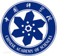

Welcome!
Biography
I am now an associate quality engineer in Red Hat, Beijing, since October 2018. Before this, I was a visiting student in the AI&NLP team in SIAT, Chinese Academy of Sciences, under the supervision of Prof. Min Yang since December 2017. Previously, I got my master's degree in CS from CQU, under the supervision of Prof. Yunni Xia in June 2018, and double bachelor degree in CS and Business Administration in 2015, respectively.
My Resume/CV (Download)
Research Interests
- Natural Language Processing
- Deep Learning
News!
We won the second place in the finals in the
Intelligent Investment Adviser Game of the Big Data and Artificial Intelligence Innovation and Entrepreneurship Contest of 2017. This is one of the competitions about machine learning and NLP in China.
Education
-
Master |
The Department of Computer Science and Technology, Chongqing University
,
2015 - 2018
-
Bachelor |
The Department of Computer Science and Technology, Chongqing University
,
2011 - 2015
-
Bachelor (Double degree) |
The School of economics and Business Administration, Chongqing University
,
2012 - 2015
Recent Highlights
{% for post in site.papers %}
{% include paper.html paper=post %}
{% endfor %}
Experience
-
Associate Quality Engineer | Red Hat
Topic: Real Time Kernel
Oct 2018 - present
-

Research Intern | BMI, Chinese Academy of Sciences
Topic: Natural Language Processing
Dec 2017 - Sept 2018
Awards
- 2nd place, The Intelligent Investment Adviser Game of the Big Data and Artificial Intelligence Innovation and Entrepreneurship Contest of 2017.
- 2nd prize, Chongqing Division, China Undergraduate Mathematical Contest in Modeling (2013).
- National Endeavor Scholarship (top 5%) (2012).
- 2nd prize, Scholarship, Chongqing University (2012).
Skills
Python, Java, Shell, Linux, Docker, Hadoop, HBase, Sqoop, Pig, Elasticsearch, Tensorflow, Keras, MySQL,MongoDB, SVN, Git, Django, Web frameworks and skills (Django, SpringMVC, Struts2, HTML, Javascript, Ajax).
Others
Click here to see my Self-evaluation.
Thank you for visiting.
 LinkedIn
LinkedIn Homepage:
Homepage: